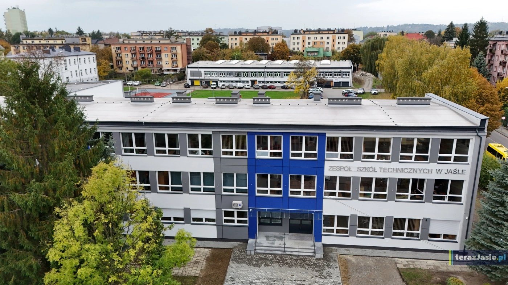

Edukacja i Rozwój
Moja przygoda z informatyką w ZST Jasło.

W Zespole Szkół Technicznych w Jaśle uczę się nie tylko teorii, ale przede wszystkim praktyki: od budowy sieci po kodowanie stron takich jak ta!
Moja przygoda z informatyką w ZST Jasło.

W Zespole Szkół Technicznych w Jaśle uczę się nie tylko teorii, ale przede wszystkim praktyki: od budowy sieci po kodowanie stron takich jak ta!